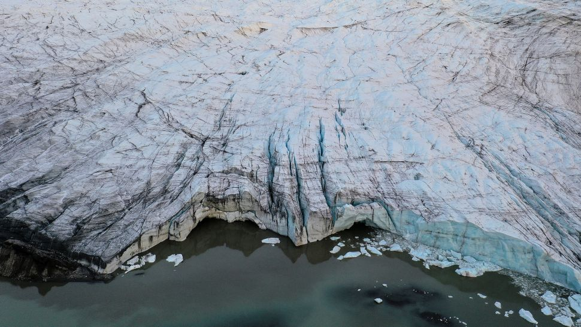
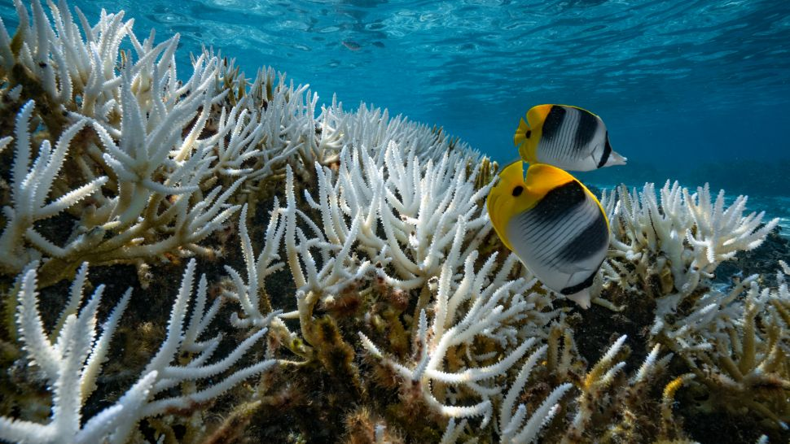
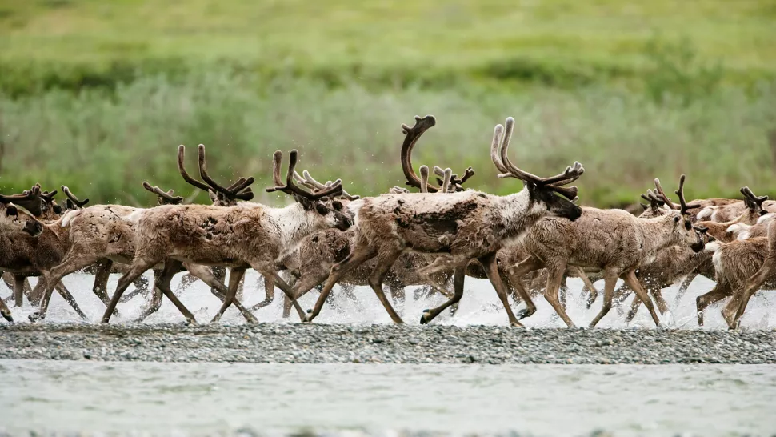
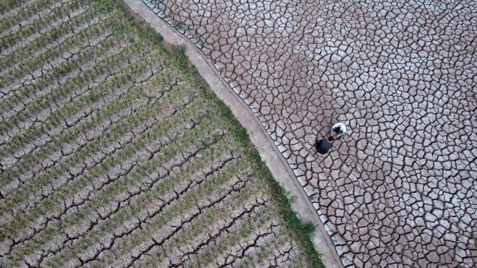

EFFECTS OF GLOBAL WARMING
𝐀𝐬 𝐠𝐥𝐨𝐛𝐚𝐥 𝐚𝐯𝐞𝐫𝐚𝐠𝐞 𝐭𝐞𝐦𝐩𝐞𝐫𝐚𝐭𝐮𝐫𝐞𝐬 𝐰𝐚𝐫𝐦, 𝐰𝐞𝐚𝐭𝐡𝐞𝐫 𝐩𝐚𝐭𝐭𝐞𝐫𝐧𝐬 𝐚𝐫𝐞 𝐜𝐡𝐚𝐧𝐠𝐢𝐧𝐠. 𝐀𝐧 𝐢𝐦𝐦𝐞𝐝𝐢𝐚𝐭𝐞 𝐜𝐨𝐧𝐬𝐞𝐪𝐮𝐞𝐧𝐜𝐞 𝐨𝐟 𝐠𝐥𝐨𝐛𝐚𝐥 𝐰𝐚𝐫𝐦𝐢𝐧𝐠 𝐢𝐬 𝐞𝐱𝐭𝐫𝐞𝐦𝐞 𝐰𝐞𝐚𝐭𝐡𝐞𝐫. 𝐓𝐡𝐞𝐬𝐞 𝐞𝐱𝐭𝐫𝐞𝐦𝐞𝐬 𝐜𝐨𝐦𝐞 𝐢𝐧 𝐚 𝐥𝐨𝐭 𝐨𝐟 𝐝𝐢𝐟𝐟𝐞𝐫𝐞𝐧𝐭 𝐟𝐥𝐚𝐯𝐨𝐮𝐫𝐬. 𝐏𝐚𝐫𝐚𝐝𝐨𝐱𝐢𝐜𝐚𝐥𝐥𝐲, 𝐨𝐧𝐞 𝐞𝐟𝐟𝐞𝐜𝐭 𝐨𝐟 𝐜𝐥𝐢𝐦𝐚𝐭𝐞 𝐜𝐡𝐚𝐧𝐠𝐞 𝐜𝐚𝐧 𝐛𝐞 𝐜𝐨𝐥𝐝𝐞𝐫-𝐭𝐡𝐚𝐧-𝐧𝐨𝐫𝐦𝐚𝐥 𝐰𝐢𝐧𝐭𝐞𝐫𝐬 𝐢𝐧 𝐬𝐨𝐦𝐞 𝐚𝐫𝐞𝐚𝐬. 𝐂𝐥𝐢𝐦𝐚𝐭𝐞 𝐜𝐡𝐚𝐧𝐠𝐞𝐬 𝐜𝐚𝐧 𝐜𝐚𝐮𝐬𝐞 𝐭𝐡𝐞 𝐩𝐨𝐥𝐚𝐫 𝐣𝐞𝐭 𝐬𝐭𝐫𝐞𝐚𝐦 — 𝐭𝐡𝐞 𝐛𝐨𝐮𝐧𝐝𝐚𝐫𝐲 𝐛𝐞𝐭𝐰𝐞𝐞𝐧 𝐭𝐡𝐞 𝐜𝐨𝐥𝐝 𝐍𝐨𝐫𝐭𝐡 𝐏𝐨𝐥𝐞 𝐚𝐢𝐫 𝐚𝐧𝐝 𝐭𝐡𝐞 𝐰𝐚𝐫𝐦 𝐞𝐪𝐮𝐚𝐭𝐨𝐫𝐢𝐚𝐥 𝐚𝐢𝐫 — 𝐭𝐨 𝐦𝐢𝐠𝐫𝐚𝐭𝐞 𝐬𝐨𝐮𝐭𝐡, 𝐛𝐫𝐢𝐧𝐠𝐢𝐧𝐠 𝐰𝐢𝐭𝐡 𝐢𝐭 𝐜𝐨𝐥𝐝, 𝐀𝐫𝐜𝐭𝐢𝐜 𝐚𝐢𝐫. 𝐓𝐡𝐢𝐬 𝐢𝐬 𝐰𝐡𝐲 𝐬𝐨𝐦𝐞 𝐬𝐭𝐚𝐭𝐞𝐬 𝐜𝐚𝐧 𝐡𝐚𝐯𝐞 𝐚 𝐬𝐮𝐝𝐝𝐞𝐧 𝐜𝐨𝐥𝐝 𝐬𝐧𝐚𝐩 𝐨𝐫 𝐜𝐨𝐥𝐝𝐞𝐫-𝐭𝐡𝐚𝐧-𝐧𝐨𝐫𝐦𝐚𝐥 𝐰𝐢𝐧𝐭𝐞𝐫, 𝐞𝐯𝐞𝐧 𝐝𝐮𝐫𝐢𝐧𝐠 𝐭𝐡𝐞 𝐥𝐨𝐧𝐠-𝐭𝐞𝐫𝐦 𝐭𝐫𝐞𝐧𝐝 𝐨𝐟 𝐠𝐥𝐨𝐛𝐚𝐥 𝐰𝐚𝐫𝐦𝐢𝐧𝐠
𝟏. 𝐆𝐋𝐎𝐁𝐀𝐋 𝐖𝐀𝐑𝐌𝐈𝐍𝐆 𝐌𝐄𝐋𝐓𝐒 𝐈𝐂𝐄

𝐎𝐧𝐞 𝐨𝐟 𝐭𝐡𝐞 𝐩𝐫𝐢𝐦𝐚𝐫𝐲 𝐦𝐚𝐧𝐢𝐟𝐞𝐬𝐭𝐚𝐭𝐢𝐨𝐧𝐬 𝐨𝐟 𝐜𝐥𝐢𝐦𝐚𝐭𝐞 𝐜𝐡𝐚𝐧𝐠𝐞 𝐬𝐨 𝐟𝐚𝐫 𝐢𝐬 𝐦𝐞𝐥𝐭𝐢𝐧𝐠. 𝐍𝐨𝐫𝐭𝐡 𝐀𝐦𝐞𝐫𝐢𝐜𝐚, 𝐄𝐮𝐫𝐨𝐩𝐞 𝐚𝐧𝐝 𝐀𝐬𝐢𝐚 𝐡𝐚𝐯𝐞 𝐚𝐥𝐥 𝐬𝐞𝐞𝐧 𝐚 𝐭𝐫𝐞𝐧𝐝 𝐭𝐨𝐰𝐚𝐫𝐝 𝐥𝐞𝐬𝐬 𝐬𝐧𝐨𝐰 𝐜𝐨𝐯𝐞𝐫 𝐛𝐞𝐭𝐰𝐞𝐞𝐧 𝟏𝟗𝟔𝟎 𝐚𝐧𝐝 𝟐𝟎𝟏𝟓, 𝐚𝐜𝐜𝐨𝐫𝐝𝐢𝐧𝐠 𝐭𝐨 𝟐𝟎𝟏𝟔 𝐫𝐞𝐬𝐞𝐚𝐫𝐜𝐡 𝐩𝐮𝐛𝐥𝐢𝐬𝐡𝐞𝐝 𝐢𝐧 𝐭𝐡𝐞 𝐣𝐨𝐮𝐫𝐧𝐚𝐥 𝐂𝐮𝐫𝐫𝐞𝐧𝐭 𝐂𝐥𝐢𝐦𝐚𝐭𝐞 𝐂𝐡𝐚𝐧𝐠𝐞 𝐑𝐞𝐩𝐨𝐫𝐭𝐬. (𝐨𝐩𝐞𝐧𝐬 𝐢𝐧 𝐧𝐞𝐰 𝐭𝐚𝐛) 𝐀𝐜𝐜𝐨𝐫𝐝𝐢𝐧𝐠 𝐭𝐨 𝐭𝐡𝐞 𝐍𝐚𝐭𝐢𝐨𝐧𝐚𝐥 𝐒𝐧𝐨𝐰 𝐚𝐧𝐝 𝐈𝐜𝐞 𝐃𝐚𝐭𝐚 𝐂𝐞𝐧𝐭𝐞𝐫, 𝐭𝐡𝐞𝐫𝐞 𝐢𝐬 𝐧𝐨𝐰 𝟏𝟎% 𝐥𝐞𝐬𝐬 𝐩𝐞𝐫𝐦𝐚𝐟𝐫𝐨𝐬𝐭(𝐨𝐩𝐞𝐧𝐬 𝐢𝐧 𝐧𝐞𝐰 𝐭𝐚𝐛), 𝐨𝐫 𝐩𝐞𝐫𝐦𝐚𝐧𝐞𝐧𝐭𝐥𝐲 𝐟𝐫𝐨𝐳𝐞𝐧 𝐠𝐫𝐨𝐮𝐧𝐝, 𝐢𝐧 𝐭𝐡𝐞 𝐍𝐨𝐫𝐭𝐡𝐞𝐫𝐧 𝐇𝐞𝐦𝐢𝐬𝐩𝐡𝐞𝐫𝐞 𝐭𝐡𝐚𝐧 𝐭𝐡𝐞𝐫𝐞 𝐰𝐚𝐬 𝐢𝐧 𝐭𝐡𝐞 𝐞𝐚𝐫𝐥𝐲 𝟏𝟗𝟎𝟎𝐬. 𝐓𝐡𝐞 𝐭𝐡𝐚𝐰𝐢𝐧𝐠 𝐨𝐟 𝐩𝐞𝐫𝐦𝐚𝐟𝐫𝐨𝐬𝐭 𝐜𝐚𝐧 𝐜𝐚𝐮𝐬𝐞 𝐥𝐚𝐧𝐝𝐬𝐥𝐢𝐝𝐞𝐬 𝐚𝐧𝐝 𝐨𝐭𝐡𝐞𝐫 𝐬𝐮𝐝𝐝𝐞𝐧 𝐥𝐚𝐧𝐝 𝐜𝐨𝐥𝐥𝐚𝐩𝐬𝐞𝐬. 𝐈𝐭 𝐜𝐚𝐧 𝐚𝐥𝐬𝐨 𝐫𝐞𝐥𝐞𝐚𝐬𝐞 𝐥𝐨𝐧𝐠-𝐛𝐮𝐫𝐢𝐞𝐝 𝐦𝐢𝐜𝐫𝐨𝐛𝐞𝐬, 𝐚𝐬 𝐢𝐧 𝐚 𝟐𝟎𝟏𝟔 𝐜𝐚𝐬𝐞 𝐰𝐡𝐞𝐧 𝐚 𝐜𝐚𝐜𝐡𝐞 𝐨𝐟 𝐛𝐮𝐫𝐢𝐞𝐝 𝐫𝐞𝐢𝐧𝐝𝐞𝐞𝐫 𝐜𝐚𝐫𝐜𝐚𝐬𝐬𝐞𝐬 𝐭𝐡𝐚𝐰𝐞𝐝 𝐚𝐧𝐝 𝐜𝐚𝐮𝐬𝐞𝐝 𝐚𝐧 𝐨𝐮𝐭𝐛𝐫𝐞𝐚𝐤 𝐨𝐟 𝐚𝐧𝐭𝐡𝐫𝐚𝐱.
𝐎𝐧𝐞 𝐨𝐟 𝐭𝐡𝐞 𝐦𝐨𝐬𝐭 𝐝𝐫𝐚𝐦𝐚𝐭𝐢𝐜 𝐞𝐟𝐟𝐞𝐜𝐭𝐬 𝐨𝐟 𝐠𝐥𝐨𝐛𝐚𝐥 𝐰𝐚𝐫𝐦𝐢𝐧𝐠 𝐢𝐬 𝐭𝐡𝐞 𝐫𝐞𝐝𝐮𝐜𝐭𝐢𝐨𝐧 𝐢𝐧 𝐀𝐫𝐜𝐭𝐢𝐜 𝐬𝐞𝐚 𝐢𝐜𝐞. 𝐒𝐞𝐚 𝐢𝐜𝐞 𝐡𝐢𝐭 𝐫𝐞𝐜𝐨𝐫𝐝-𝐥𝐨𝐰 𝐞𝐱𝐭𝐞𝐧𝐭𝐬 𝐢𝐧 𝐛𝐨𝐭𝐡 𝐭𝐡𝐞 𝐟𝐚𝐥𝐥 𝐚𝐧𝐝 𝐰𝐢𝐧𝐭𝐞𝐫 𝐨𝐟 𝟐𝟎𝟏𝟓 𝐚𝐧𝐝 𝟐𝟎𝟏𝟔, 𝐦𝐞𝐚𝐧𝐢𝐧𝐠 𝐭𝐡𝐚𝐭 𝐚𝐭 𝐭𝐡𝐞 𝐭𝐢𝐦𝐞 𝐰𝐡𝐞𝐧 𝐭𝐡𝐞 𝐢𝐜𝐞 𝐢𝐬 𝐬𝐮𝐩𝐩𝐨𝐬𝐞𝐝 𝐭𝐨 𝐛𝐞 𝐚𝐭 𝐢𝐭𝐬 𝐩𝐞𝐚𝐤, 𝐢𝐭 𝐰𝐚𝐬 𝐥𝐚𝐠𝐠𝐢𝐧𝐠. 𝐓𝐡𝐞 𝐦𝐞𝐥𝐭 𝐦𝐞𝐚𝐧𝐬 𝐭𝐡𝐞𝐫𝐞 𝐢𝐬 𝐥𝐞𝐬𝐬 𝐭𝐡𝐢𝐜𝐤 𝐬𝐞𝐚 𝐢𝐜𝐞 𝐭𝐡𝐚𝐭 𝐩𝐞𝐫𝐬𝐢𝐬𝐭𝐬 𝐟𝐨𝐫 𝐦𝐮𝐥𝐭𝐢𝐩𝐥𝐞 𝐲𝐞𝐚𝐫𝐬. 𝐓𝐡𝐚𝐭 𝐦𝐞𝐚𝐧𝐬 𝐥𝐞𝐬𝐬 𝐡𝐞𝐚𝐭 𝐢𝐬 𝐫𝐞𝐟𝐥𝐞𝐜𝐭𝐞𝐝 𝐢𝐧𝐭𝐨 𝐭𝐡𝐞 𝐚𝐭𝐦𝐨𝐬𝐩𝐡𝐞𝐫𝐞 𝐛𝐲 𝐭𝐡𝐞 𝐬𝐡𝐢𝐧𝐲 𝐬𝐮𝐫𝐟𝐚𝐜𝐞 𝐨𝐟 𝐭𝐡𝐞 𝐢𝐜𝐞 𝐚𝐧𝐝 𝐦𝐨𝐫𝐞 𝐢𝐬 𝐚𝐛𝐬𝐨𝐫𝐛𝐞𝐝 𝐛𝐲 𝐭𝐡𝐞 𝐜𝐨𝐦𝐩𝐚𝐫𝐚𝐭𝐢𝐯𝐞𝐥𝐲 𝐝𝐚𝐫𝐤𝐞𝐫 𝐨𝐜𝐞𝐚𝐧, 𝐜𝐫𝐞𝐚𝐭𝐢𝐧𝐠 𝐚 𝐟𝐞𝐞𝐝𝐛𝐚𝐜𝐤 𝐥𝐨𝐨𝐩 𝐭𝐡𝐚𝐭 𝐜𝐚𝐮𝐬𝐞𝐬 𝐞𝐯𝐞𝐧 𝐦𝐨𝐫𝐞 𝐦𝐞𝐥𝐭, 𝐚𝐜𝐜𝐨𝐫𝐝𝐢𝐧𝐠 𝐭𝐨 𝐍𝐀𝐒𝐀'𝐬 𝐎𝐩𝐞𝐫𝐚𝐭𝐢𝐨𝐧 𝐈𝐜𝐞𝐁𝐫𝐢𝐝𝐠𝐞(𝐨𝐩𝐞𝐧𝐬 𝐢𝐧 𝐧𝐞𝐰 𝐭𝐚𝐛).
𝐆𝐥𝐚𝐜𝐢𝐚𝐥 𝐫𝐞𝐭𝐫𝐞𝐚𝐭, 𝐭𝐨𝐨, 𝐢𝐬 𝐚𝐧 𝐨𝐛𝐯𝐢𝐨𝐮𝐬 𝐞𝐟𝐟𝐞𝐜𝐭 𝐨𝐟 𝐠𝐥𝐨𝐛𝐚𝐥 𝐰𝐚𝐫𝐦𝐢𝐧𝐠. 𝐎𝐧𝐥𝐲 𝟐𝟓 𝐠𝐥𝐚𝐜𝐢𝐞𝐫𝐬 𝐛𝐢𝐠𝐠𝐞𝐫 𝐭𝐡𝐚𝐧 𝟐𝟓 𝐚𝐜𝐫𝐞𝐬 𝐚𝐫𝐞 𝐧𝐨𝐰 𝐟𝐨𝐮𝐧𝐝 𝐢𝐧 𝐌𝐨𝐧𝐭𝐚𝐧𝐚'𝐬 𝐆𝐥𝐚𝐜𝐢𝐞𝐫 𝐍𝐚𝐭𝐢𝐨𝐧𝐚𝐥 𝐏𝐚𝐫𝐤, 𝐰𝐡𝐞𝐫𝐞 𝐚𝐛𝐨𝐮𝐭 𝟏𝟓𝟎 𝐠𝐥𝐚𝐜𝐢𝐞𝐫𝐬 𝐰𝐞𝐫𝐞 𝐨𝐧𝐜𝐞 𝐟𝐨𝐮𝐧𝐝, 𝐚𝐜𝐜𝐨𝐫𝐝𝐢𝐧𝐠 𝐭𝐨 𝐭𝐡𝐞 𝐔.𝐒. 𝐆𝐞𝐨𝐥𝐨𝐠𝐢𝐜𝐚𝐥 𝐒𝐮𝐫𝐯𝐞𝐲. 𝐀 𝐬𝐢𝐦𝐢𝐥𝐚𝐫 𝐭𝐫𝐞𝐧𝐝 𝐢𝐬 𝐬𝐞𝐞𝐧 𝐢𝐧 𝐠𝐥𝐚𝐜𝐢𝐚𝐥 𝐚𝐫𝐞𝐚𝐬 𝐰𝐨𝐫𝐥𝐝𝐰𝐢𝐝𝐞. 𝐀𝐜𝐜𝐨𝐫𝐝𝐢𝐧𝐠 𝐭𝐨 𝐚 𝟐𝟎𝟏𝟔 𝐬𝐭𝐮𝐝𝐲 𝐢𝐧 𝐭𝐡𝐞 𝐣𝐨𝐮𝐫𝐧𝐚𝐥 𝐍𝐚𝐭𝐮𝐫𝐞 𝐆𝐞𝐨𝐬𝐜𝐢𝐞𝐧𝐜𝐞, 𝐭𝐡𝐞𝐫𝐞 𝐢𝐬 𝐚 𝟗𝟗% 𝐥𝐢𝐤𝐞𝐥𝐢𝐡𝐨𝐨𝐝 𝐭𝐡𝐚𝐭 𝐭𝐡𝐢𝐬 𝐫𝐚𝐩𝐢𝐝 𝐫𝐞𝐭𝐫𝐞𝐚𝐭 𝐢𝐬 𝐝𝐮𝐞 𝐭𝐨 𝐡𝐮𝐦𝐚𝐧-𝐜𝐚𝐮𝐬𝐞𝐝 𝐜𝐥𝐢𝐦𝐚𝐭𝐞 𝐜𝐡𝐚𝐧𝐠𝐞. 𝐒𝐨𝐦𝐞 𝐠𝐥𝐚𝐜𝐢𝐞𝐫𝐬 𝐫𝐞𝐭𝐫𝐞𝐚𝐭𝐞𝐝 𝐮𝐩 𝐭𝐨 𝟏𝟓 𝐭𝐢𝐦𝐞𝐬 𝐚𝐬 𝐦𝐮𝐜𝐡 𝐚𝐬 𝐭𝐡𝐞𝐲 𝐰𝐨𝐮𝐥𝐝 𝐡𝐚𝐯𝐞 𝐰𝐢𝐭𝐡𝐨𝐮𝐭 𝐠𝐥𝐨𝐛𝐚𝐥 𝐰𝐚𝐫𝐦𝐢𝐧𝐠, 𝐭𝐡𝐨𝐬𝐞 𝐫𝐞𝐬𝐞𝐚𝐫𝐜𝐡𝐞𝐫𝐬 𝐟𝐨𝐮𝐧𝐝.
𝟐. 𝐒𝐄𝐀 𝐋𝐄𝐕𝐄𝐋𝐒 𝐀𝐍𝐃 𝐎𝐂𝐄𝐀𝐍 𝐀𝐂𝐈𝐃𝐈𝐅𝐈𝐂𝐀𝐓𝐈𝐎𝐍

𝐈𝐧 𝐠𝐞𝐧𝐞𝐫𝐚𝐥, 𝐚𝐬 𝐢𝐜𝐞 𝐦𝐞𝐥𝐭𝐬, 𝐬𝐞𝐚 𝐥𝐞𝐯𝐞𝐥𝐬 𝐫𝐢𝐬𝐞. 𝐀𝐜𝐜𝐨𝐫𝐝𝐢𝐧𝐠 𝐭𝐨 𝐚 𝟐𝟎𝟐𝟏 𝐫𝐞𝐩𝐨𝐫𝐭 𝐛𝐲 𝐭𝐡𝐞 𝐖𝐨𝐫𝐥𝐝 𝐌𝐞𝐭𝐞𝐨𝐫𝐨𝐥𝐨𝐠𝐢𝐜𝐚𝐥 𝐎𝐫𝐠𝐚𝐧𝐢𝐳𝐚𝐭𝐢𝐨𝐧(𝐨𝐩𝐞𝐧𝐬 𝐢𝐧 𝐧𝐞𝐰 𝐭𝐚𝐛), 𝐭𝐡𝐞 𝐩𝐚𝐜𝐞 𝐨𝐟 𝐬𝐞𝐚 𝐥𝐞𝐯𝐞𝐥 𝐫𝐢𝐬𝐞 𝐝𝐨𝐮𝐛𝐥𝐞𝐝 𝐟𝐫𝐨𝐦 𝟎.𝟎𝟖 𝐢𝐧𝐜𝐡𝐞𝐬 (𝟐.𝟏 𝐦𝐢𝐥𝐥𝐢𝐦𝐞𝐭𝐞𝐫𝐬) 𝐩𝐞𝐫 𝐲𝐞𝐚𝐫 𝐛𝐞𝐭𝐰𝐞𝐞𝐧 𝟏𝟗𝟗𝟑 𝐚𝐧𝐝 𝟐𝟎𝟎𝟐 𝐭𝐨 𝟎.𝟏𝟕 𝐢𝐧𝐜𝐡𝐞𝐬 (𝟒.𝟒 𝐦𝐦) 𝐩𝐞𝐫 𝐲𝐞𝐚𝐫 𝐛𝐞𝐭𝐰𝐞𝐞𝐧 𝟐𝟎𝟏𝟑 𝐚𝐧𝐝 𝟐𝟎𝟐𝟏.
𝐌𝐞𝐥𝐭𝐢𝐧𝐠 𝐩𝐨𝐥𝐚𝐫 𝐢𝐜𝐞 𝐢𝐧 𝐭𝐡𝐞 𝐀𝐫𝐜𝐭𝐢𝐜 𝐚𝐧𝐝 𝐀𝐧𝐭𝐚𝐫𝐜𝐭𝐢𝐜 𝐫𝐞𝐠𝐢𝐨𝐧𝐬, 𝐜𝐨𝐮𝐩𝐥𝐞𝐝 𝐰𝐢𝐭𝐡 𝐦𝐞𝐥𝐭𝐢𝐧𝐠 𝐢𝐜𝐞 𝐬𝐡𝐞𝐞𝐭𝐬 𝐚𝐧𝐝 𝐠𝐥𝐚𝐜𝐢𝐞𝐫𝐬 𝐚𝐜𝐫𝐨𝐬𝐬 𝐆𝐫𝐞𝐞𝐧𝐥𝐚𝐧𝐝, 𝐍𝐨𝐫𝐭𝐡 𝐀𝐦𝐞𝐫𝐢𝐜𝐚, 𝐒𝐨𝐮𝐭𝐡 𝐀𝐦𝐞𝐫𝐢𝐜𝐚, 𝐄𝐮𝐫𝐨𝐩𝐞 𝐚𝐧𝐝 𝐀𝐬𝐢𝐚, 𝐚𝐫𝐞 𝐞𝐱𝐩𝐞𝐜𝐭𝐞𝐝 𝐭𝐨 𝐫𝐚𝐢𝐬𝐞 𝐬𝐞𝐚 𝐥𝐞𝐯𝐞𝐥𝐬 𝐬𝐢𝐠𝐧𝐢𝐟𝐢𝐜𝐚𝐧𝐭𝐥𝐲. 𝐆𝐥𝐨𝐛𝐚𝐥 𝐬𝐞𝐚 𝐥𝐞𝐯𝐞𝐥𝐬 𝐡𝐚𝐯𝐞 𝐫𝐢𝐬𝐞𝐧 𝐚𝐛𝐨𝐮𝐭 𝟖 𝐢𝐧𝐜𝐡𝐞𝐬 𝐬𝐢𝐧𝐜𝐞 𝟏𝟖𝟕𝟎, 𝐚𝐜𝐜𝐨𝐫𝐝𝐢𝐧𝐠 𝐭𝐨 𝐭𝐡𝐞 𝐄𝐏𝐀, 𝐚𝐧𝐝 𝐭𝐡𝐞 𝐫𝐚𝐭𝐞 𝐨𝐟 𝐢𝐧𝐜𝐫𝐞𝐚𝐬𝐞 𝐢𝐬 𝐞𝐱𝐩𝐞𝐜𝐭𝐞𝐝 𝐭𝐨 𝐚𝐜𝐜𝐞𝐥𝐞𝐫𝐚𝐭𝐞 𝐢𝐧 𝐭𝐡𝐞 𝐜𝐨𝐦𝐢𝐧𝐠 𝐲𝐞𝐚𝐫𝐬. 𝐈𝐟 𝐜𝐮𝐫𝐫𝐞𝐧𝐭 𝐭𝐫𝐞𝐧𝐝𝐬 𝐜𝐨𝐧𝐭𝐢𝐧𝐮𝐞, 𝐦𝐚𝐧𝐲 𝐜𝐨𝐚𝐬𝐭𝐚𝐥 𝐚𝐫𝐞𝐚𝐬, 𝐰𝐡𝐞𝐫𝐞 𝐫𝐨𝐮𝐠𝐡𝐥𝐲 𝐡𝐚𝐥𝐟 𝐨𝐟 𝐭𝐡𝐞 𝐄𝐚𝐫𝐭𝐡'𝐬 𝐡𝐮𝐦𝐚𝐧 𝐩𝐨𝐩𝐮𝐥𝐚𝐭𝐢𝐨𝐧 𝐥𝐢𝐯𝐞𝐬, 𝐰𝐢𝐥𝐥 𝐛𝐞 𝐢𝐧𝐮𝐧𝐝𝐚𝐭𝐞𝐝.
𝐑𝐞𝐬𝐞𝐚𝐫𝐜𝐡𝐞𝐫𝐬 𝐩𝐫𝐨𝐣𝐞𝐜𝐭 𝐭𝐡𝐚𝐭 𝐛𝐲 𝟐𝟏𝟎𝟎, 𝐚𝐯𝐞𝐫𝐚𝐠𝐞 𝐬𝐞𝐚 𝐥𝐞𝐯𝐞𝐥𝐬 𝐰𝐢𝐥𝐥 𝐛𝐞 𝟐.𝟑 𝐟𝐞𝐞𝐭 (.𝟕 𝐦𝐞𝐭𝐞𝐫𝐬) 𝐡𝐢𝐠𝐡𝐞𝐫 𝐢𝐧 𝐍𝐞𝐰 𝐘𝐨𝐫𝐤 𝐂𝐢𝐭𝐲, 𝟐.𝟗 𝐟𝐞𝐞𝐭 (𝟎.𝟖𝟖 𝐦) 𝐡𝐢𝐠𝐡𝐞𝐫 𝐚𝐭 𝐇𝐚𝐦𝐩𝐭𝐨𝐧 𝐑𝐨𝐚𝐝𝐬, 𝐕𝐢𝐫𝐠𝐢𝐧𝐢𝐚, 𝐚𝐧𝐝 𝟑.𝟓 𝐟𝐞𝐞𝐭 (𝟏.𝟎𝟔 𝐦) 𝐡𝐢𝐠𝐡𝐞𝐫 𝐚𝐭 𝐆𝐚𝐥𝐯𝐞𝐬𝐭𝐨𝐧, 𝐓𝐞𝐱𝐚𝐬, 𝐭𝐡𝐞 𝐄𝐏𝐀 𝐫𝐞𝐩𝐨𝐫𝐭𝐬. 𝐀𝐜𝐜𝐨𝐫𝐝𝐢𝐧𝐠 𝐭𝐨 𝐚𝐧 𝐈𝐏𝐂𝐂 𝐫𝐞𝐩𝐨𝐫𝐭(𝐨𝐩𝐞𝐧𝐬 𝐢𝐧 𝐧𝐞𝐰 𝐭𝐚𝐛), 𝐢𝐟 𝐠𝐫𝐞𝐞𝐧𝐡𝐨𝐮𝐬𝐞 𝐠𝐚𝐬 𝐞𝐦𝐢𝐬𝐬𝐢𝐨𝐧𝐬 𝐫𝐞𝐦𝐚𝐢𝐧 𝐮𝐧𝐜𝐡𝐞𝐜𝐤𝐞𝐝, 𝐠𝐥𝐨𝐛𝐚𝐥 𝐬𝐞𝐚 𝐥𝐞𝐯𝐞𝐥𝐬 𝐜𝐨𝐮𝐥𝐝 𝐫𝐢𝐬𝐞 𝐛𝐲 𝐚𝐬 𝐦𝐮𝐜𝐡 𝐚𝐬 𝟑 𝐟𝐞𝐞𝐭 (𝟎.𝟗 𝐦𝐞𝐭𝐞𝐫𝐬) 𝐛𝐲 𝟐𝟏𝟎𝟎. 𝐓𝐡𝐚𝐭 𝐞𝐬𝐭𝐢𝐦𝐚𝐭𝐞 𝐢𝐬 𝐚𝐧 𝐢𝐧𝐜𝐫𝐞𝐚𝐬𝐞 𝐟𝐫𝐨𝐦 𝐭𝐡𝐞 𝐞𝐬𝐭𝐢𝐦𝐚𝐭𝐞𝐝 𝟎.𝟗 𝐭𝐨 𝟐.𝟕 𝐟𝐞𝐞𝐭 (𝟎.𝟑 𝐭𝐨 𝟎.𝟖 𝐦𝐞𝐭𝐞𝐫𝐬) 𝐭𝐡𝐚𝐭 𝐰𝐚𝐬 𝐩𝐫𝐞𝐝𝐢𝐜𝐭𝐞𝐝 𝐢𝐧 𝐭𝐡𝐞 𝟐𝟎𝟎𝟕 𝐈𝐏𝐂𝐂 𝐫𝐞𝐩𝐨𝐫𝐭 𝐟𝐨𝐫 𝐟𝐮𝐭𝐮𝐫𝐞 𝐬𝐞𝐚-𝐥𝐞𝐯𝐞𝐥 𝐫𝐢𝐬𝐞.
𝐒𝐞𝐚 𝐥𝐞𝐯𝐞𝐥 𝐢𝐬𝐧'𝐭 𝐭𝐡𝐞 𝐨𝐧𝐥𝐲 𝐭𝐡𝐢𝐧𝐠 𝐜𝐡𝐚𝐧𝐠𝐢𝐧𝐠 𝐟𝐨𝐫 𝐭𝐡𝐞 𝐨𝐜𝐞𝐚𝐧𝐬 𝐝𝐮𝐞 𝐭𝐨 𝐠𝐥𝐨𝐛𝐚𝐥 𝐰𝐚𝐫𝐦𝐢𝐧𝐠. 𝐀𝐬 𝐥𝐞𝐯𝐞𝐥𝐬 𝐨𝐟 𝐂𝐎𝟐 𝐢𝐧𝐜𝐫𝐞𝐚𝐬𝐞, 𝐭𝐡𝐞 𝐨𝐜𝐞𝐚𝐧𝐬 𝐚𝐛𝐬𝐨𝐫𝐛 𝐬𝐨𝐦𝐞 𝐨𝐟 𝐭𝐡𝐚𝐭 𝐠𝐚𝐬, 𝐰𝐡𝐢𝐜𝐡 𝐢𝐧𝐜𝐫𝐞𝐚𝐬𝐞𝐬 𝐭𝐡𝐞 𝐚𝐜𝐢𝐝𝐢𝐭𝐲 𝐨𝐟 𝐬𝐞𝐚𝐰𝐚𝐭𝐞𝐫. 𝐖𝐞𝐫𝐧𝐞 𝐞𝐱𝐩𝐥𝐚𝐢𝐧𝐬 𝐢𝐭 𝐭𝐡𝐢𝐬 𝐰𝐚𝐲: "𝐖𝐡𝐞𝐧 𝐲𝐨𝐮 𝐝𝐢𝐬𝐬𝐨𝐥𝐯𝐞𝐝 𝐂𝐎𝟐 𝐢𝐧 𝐰𝐚𝐭𝐞𝐫, 𝐲𝐨𝐮 𝐠𝐞𝐭 𝐜𝐚𝐫𝐛𝐨𝐧𝐢𝐜 𝐚𝐜𝐢𝐝. 𝐓𝐡𝐢𝐬 𝐢𝐬 𝐭𝐡𝐞 𝐬𝐚𝐦𝐞 𝐞𝐱𝐚𝐜𝐭 𝐭𝐡𝐢𝐧𝐠 𝐭𝐡𝐚𝐭 𝐡𝐚𝐩𝐩𝐞𝐧𝐬 𝐢𝐧 𝐜𝐚𝐧𝐬 𝐨𝐟 𝐬𝐨𝐝𝐚. 𝐖𝐡𝐞𝐧 𝐲𝐨𝐮 𝐩𝐨𝐩 𝐭𝐡𝐞 𝐭𝐨𝐩 𝐨𝐧 𝐚 𝐜𝐚𝐧 𝐨𝐟 𝐃𝐫 𝐏𝐞𝐩𝐩𝐞𝐫, 𝐭𝐡𝐞 𝐩𝐇 𝐢𝐬 𝟐 — 𝐪𝐮𝐢𝐭𝐞 𝐚𝐜𝐢𝐝𝐢𝐜."
𝐒𝐢𝐧𝐜𝐞 𝐭𝐡𝐞 𝐈𝐧𝐝𝐮𝐬𝐭𝐫𝐢𝐚𝐥 𝐑𝐞𝐯𝐨𝐥𝐮𝐭𝐢𝐨𝐧 𝐛𝐞𝐠𝐚𝐧 𝐢𝐧 𝐭𝐡𝐞 𝐞𝐚𝐫𝐥𝐲 𝟏𝟕𝟎𝟎𝐬, 𝐭𝐡𝐞 𝐚𝐜𝐢𝐝𝐢𝐭𝐲 𝐨𝐟 𝐭𝐡𝐞 𝐨𝐜𝐞𝐚𝐧𝐬 𝐡𝐚𝐬 𝐢𝐧𝐜𝐫𝐞𝐚𝐬𝐞𝐝 𝐚𝐛𝐨𝐮𝐭 𝟐𝟓 𝐩𝐞𝐫𝐜𝐞𝐧𝐭, 𝐚𝐜𝐜𝐨𝐫𝐝𝐢𝐧𝐠 𝐭𝐨 𝐭𝐡𝐞 𝐄𝐏𝐀. "𝐓𝐡𝐢𝐬 𝐢𝐬 𝐚 𝐩𝐫𝐨𝐛𝐥𝐞𝐦 𝐢𝐧 𝐭𝐡𝐞 𝐨𝐜𝐞𝐚𝐧𝐬, 𝐢𝐧 𝐥𝐚𝐫𝐠𝐞 𝐩𝐚𝐫𝐭, 𝐛𝐞𝐜𝐚𝐮𝐬𝐞 𝐦𝐚𝐧𝐲 𝐦𝐚𝐫𝐢𝐧𝐞 𝐨𝐫𝐠𝐚𝐧𝐢𝐬𝐦𝐬 𝐦𝐚𝐤𝐞 𝐬𝐡𝐞𝐥𝐥𝐬 𝐨𝐮𝐭 𝐨𝐟 𝐜𝐚𝐥𝐜𝐢𝐮𝐦 𝐜𝐚𝐫𝐛𝐨𝐧𝐚𝐭𝐞 (𝐭𝐡𝐢𝐧𝐤 𝐜𝐨𝐫𝐚𝐥𝐬, 𝐨𝐲𝐬𝐭𝐞𝐫𝐬), 𝐚𝐧𝐝 𝐭𝐡𝐞𝐢𝐫 𝐬𝐡𝐞𝐥𝐥𝐬 𝐝𝐢𝐬𝐬𝐨𝐥𝐯𝐞 𝐢𝐧 𝐚𝐜𝐢𝐝 𝐬𝐨𝐥𝐮𝐭𝐢𝐨𝐧," 𝐬𝐚𝐢𝐝 𝐖𝐞𝐫𝐧𝐞. "𝐒𝐨 𝐚𝐬 𝐰𝐞 𝐚𝐝𝐝 𝐦𝐨𝐫𝐞 𝐚𝐧𝐝 𝐦𝐨𝐫𝐞 𝐂𝐎𝟐 𝐭𝐨 𝐭𝐡𝐞 𝐨𝐜𝐞𝐚𝐧, 𝐢𝐭 𝐠𝐞𝐭𝐬 𝐦𝐨𝐫𝐞 𝐚𝐧𝐝 𝐦𝐨𝐫𝐞 𝐚𝐜𝐢𝐝𝐢𝐜, 𝐝𝐢𝐬𝐬𝐨𝐥𝐯𝐢𝐧𝐠 𝐦𝐨𝐫𝐞 𝐚𝐧𝐝 𝐦𝐨𝐫𝐞 𝐬𝐡𝐞𝐥𝐥𝐬 𝐨𝐟 𝐬𝐞𝐚 𝐜𝐫𝐞𝐚𝐭𝐮𝐫𝐞𝐬. 𝐈𝐭 𝐠𝐨𝐞𝐬 𝐰𝐢𝐭𝐡𝐨𝐮𝐭 𝐬𝐚𝐲𝐢𝐧𝐠 𝐭𝐡𝐚𝐭 𝐭𝐡𝐢𝐬 𝐢𝐬 𝐧𝐨𝐭 𝐠𝐨𝐨𝐝 𝐟𝐨𝐫 𝐭𝐡𝐞𝐢𝐫 𝐡𝐞𝐚𝐥𝐭𝐡."
𝐈𝐟 𝐜𝐮𝐫𝐫𝐞𝐧𝐭 𝐨𝐜𝐞𝐚𝐧 𝐚𝐜𝐢𝐝𝐢𝐟𝐢𝐜𝐚𝐭𝐢𝐨𝐧 𝐭𝐫𝐞𝐧𝐝𝐬 𝐜𝐨𝐧𝐭𝐢𝐧𝐮𝐞, 𝐜𝐨𝐫𝐚𝐥 𝐫𝐞𝐞𝐟𝐬 𝐚𝐫𝐞 𝐞𝐱𝐩𝐞𝐜𝐭𝐞𝐝 𝐭𝐨 𝐛𝐞𝐜𝐨𝐦𝐞 𝐢𝐧𝐜𝐫𝐞𝐚𝐬𝐢𝐧𝐠𝐥𝐲 𝐫𝐚𝐫𝐞 𝐢𝐧 𝐚𝐫𝐞𝐚𝐬 𝐰𝐡𝐞𝐫𝐞 𝐭𝐡𝐞𝐲 𝐚𝐫𝐞 𝐧𝐨𝐰 𝐜𝐨𝐦𝐦𝐨𝐧, 𝐢𝐧𝐜𝐥𝐮𝐝𝐢𝐧𝐠 𝐦𝐨𝐬𝐭 𝐔.𝐒. 𝐰𝐚𝐭𝐞𝐫𝐬, 𝐭𝐡𝐞 𝐄𝐏𝐀 𝐫𝐞𝐩𝐨𝐫𝐭𝐬. 𝐈𝐧 𝟐𝟎𝟏𝟔 𝐚𝐧𝐝 𝟐𝟎𝟏𝟕, 𝐩𝐨𝐫𝐭𝐢𝐨𝐧𝐬 𝐨𝐟 𝐭𝐡𝐞 𝐆𝐫𝐞𝐚𝐭 𝐁𝐚𝐫𝐫𝐢𝐞𝐫 𝐑𝐞𝐞𝐟 𝐢𝐧 𝐀𝐮𝐬𝐭𝐫𝐚𝐥𝐢𝐚 𝐰𝐞𝐫𝐞 𝐡𝐢𝐭 𝐰𝐢𝐭𝐡 𝐛𝐥𝐞𝐚𝐜𝐡𝐢𝐧𝐠, 𝐚 𝐩𝐡𝐞𝐧𝐨𝐦𝐞𝐧𝐨𝐧 𝐢𝐧 𝐰𝐡𝐢𝐜𝐡 𝐜𝐨𝐫𝐚𝐥 𝐞𝐣𝐞𝐜𝐭 𝐭𝐡𝐞𝐢𝐫 𝐬𝐲𝐦𝐛𝐢𝐨𝐭𝐢𝐜 𝐚𝐥𝐠𝐚𝐞. 𝐁𝐥𝐞𝐚𝐜𝐡𝐢𝐧𝐠 𝐢𝐬 𝐚 𝐬𝐢𝐠𝐧 𝐨𝐟 𝐬𝐭𝐫𝐞𝐬𝐬 𝐟𝐫𝐨𝐦 𝐭𝐨𝐨-𝐰𝐚𝐫𝐦 𝐰𝐚𝐭𝐞𝐫𝐬, 𝐮𝐧𝐛𝐚𝐥𝐚𝐧𝐜𝐞𝐝 𝐩𝐇 𝐨𝐫 𝐩𝐨𝐥𝐥𝐮𝐭𝐢𝐨𝐧; 𝐜𝐨𝐫𝐚𝐥 𝐜𝐚𝐧 𝐫𝐞𝐜𝐨𝐯𝐞𝐫 𝐟𝐫𝐨𝐦 𝐛𝐥𝐞𝐚𝐜𝐡𝐢𝐧𝐠, 𝐛𝐮𝐭 𝐛𝐚𝐜𝐤-𝐭𝐨-𝐛𝐚𝐜𝐤 𝐞𝐩𝐢𝐬𝐨𝐝𝐞𝐬 𝐦𝐚𝐤𝐞 𝐫𝐞𝐜𝐨𝐯𝐞𝐫𝐲 𝐥𝐞𝐬𝐬 𝐥𝐢𝐤𝐞𝐥𝐲.
𝟑. 𝐏𝐋𝐀𝐍𝐓𝐒 𝐀𝐍𝐃 𝐀𝐍𝐈𝐌𝐀𝐋𝐒

𝐓𝐡𝐞 𝐞𝐟𝐟𝐞𝐜𝐭𝐬 𝐨𝐟 𝐠𝐥𝐨𝐛𝐚𝐥 𝐰𝐚𝐫𝐦𝐢𝐧𝐠 𝐨𝐧 𝐄𝐚𝐫𝐭𝐡'𝐬 𝐞𝐜𝐨𝐬𝐲𝐬𝐭𝐞𝐦𝐬 𝐚𝐫𝐞 𝐞𝐱𝐩𝐞𝐜𝐭𝐞𝐝 𝐭𝐨 𝐛𝐞 𝐬𝐢𝐠𝐧𝐢𝐟𝐢𝐜𝐚𝐧𝐭 𝐚𝐧𝐝 𝐰𝐢𝐝𝐞𝐬𝐩𝐫𝐞𝐚𝐝. 𝐌𝐚𝐧𝐲 𝐬𝐩𝐞𝐜𝐢𝐞𝐬 𝐨𝐟 𝐩𝐥𝐚𝐧𝐭𝐬 𝐚𝐧𝐝 𝐚𝐧𝐢𝐦𝐚𝐥𝐬 𝐚𝐫𝐞 𝐚𝐥𝐫𝐞𝐚𝐝𝐲 𝐦𝐨𝐯𝐢𝐧𝐠 𝐭𝐡𝐞𝐢𝐫 𝐫𝐚𝐧𝐠𝐞 𝐧𝐨𝐫𝐭𝐡𝐰𝐚𝐫𝐝 𝐨𝐫 𝐭𝐨 𝐡𝐢𝐠𝐡𝐞𝐫 𝐚𝐥𝐭𝐢𝐭𝐮𝐝𝐞𝐬 𝐚𝐬 𝐚 𝐫𝐞𝐬𝐮𝐥𝐭 𝐨𝐟 𝐰𝐚𝐫𝐦𝐢𝐧𝐠 𝐭𝐞𝐦𝐩𝐞𝐫𝐚𝐭𝐮𝐫𝐞𝐬, 𝐚𝐜𝐜𝐨𝐫𝐝𝐢𝐧𝐠 𝐭𝐨 𝐚 𝐫𝐞𝐩𝐨𝐫𝐭 𝐟𝐫𝐨𝐦 𝐭𝐡𝐞 𝐍𝐚𝐭𝐢𝐨𝐧𝐚𝐥 𝐀𝐜𝐚𝐝𝐞𝐦𝐲 𝐨𝐟 𝐒𝐜𝐢𝐞𝐧𝐜𝐞𝐬.
"𝐓𝐡𝐞𝐲 𝐚𝐫𝐞 𝐧𝐨𝐭 𝐣𝐮𝐬𝐭 𝐦𝐨𝐯𝐢𝐧𝐠 𝐧𝐨𝐫𝐭𝐡, 𝐭𝐡𝐞𝐲 𝐚𝐫𝐞 𝐦𝐨𝐯𝐢𝐧𝐠 𝐟𝐫𝐨𝐦 𝐭𝐡𝐞 𝐞𝐪𝐮𝐚𝐭𝐨𝐫 𝐭𝐨𝐰𝐚𝐫𝐝 𝐭𝐡𝐞 𝐩𝐨𝐥𝐞𝐬. 𝐓𝐡𝐞𝐲 𝐚𝐫𝐞 𝐪𝐮𝐢𝐭𝐞 𝐬𝐢𝐦𝐩𝐥𝐲 𝐟𝐨𝐥𝐥𝐨𝐰𝐢𝐧𝐠 𝐭𝐡𝐞 𝐫𝐚𝐧𝐠𝐞 𝐨𝐟 𝐜𝐨𝐦𝐟𝐨𝐫𝐭𝐚𝐛𝐥𝐞 𝐭𝐞𝐦𝐩𝐞𝐫𝐚𝐭𝐮𝐫𝐞𝐬, 𝐰𝐡𝐢𝐜𝐡 𝐢𝐬 𝐦𝐢𝐠𝐫𝐚𝐭𝐢𝐧𝐠 𝐭𝐨 𝐭𝐡𝐞 𝐩𝐨𝐥𝐞𝐬 𝐚𝐬 𝐭𝐡𝐞 𝐠𝐥𝐨𝐛𝐚𝐥 𝐚𝐯𝐞𝐫𝐚𝐠𝐞 𝐭𝐞𝐦𝐩𝐞𝐫𝐚𝐭𝐮𝐫𝐞 𝐰𝐚𝐫𝐦𝐬," 𝐖𝐞𝐫𝐧𝐞 𝐬𝐚𝐢𝐝. 𝐔𝐥𝐭𝐢𝐦𝐚𝐭𝐞𝐥𝐲, 𝐡𝐞 𝐬𝐚𝐢𝐝, 𝐭𝐡𝐢𝐬 𝐛𝐞𝐜𝐨𝐦𝐞𝐬 𝐚 𝐩𝐫𝐨𝐛𝐥𝐞𝐦 𝐰𝐡𝐞𝐧 𝐭𝐡𝐞 𝐫𝐚𝐭𝐞 𝐨𝐟 𝐜𝐥𝐢𝐦𝐚𝐭𝐞 𝐜𝐡𝐚𝐧𝐠𝐞 𝐯𝐞𝐥𝐨𝐜𝐢𝐭𝐲 (𝐡𝐨𝐰 𝐟𝐚𝐬𝐭 𝐚 𝐫𝐞𝐠𝐢𝐨𝐧 𝐜𝐡𝐚𝐧𝐠𝐞𝐬 𝐩𝐮𝐭 𝐢𝐧𝐭𝐨 𝐚 𝐬𝐩𝐚𝐭𝐢𝐚𝐥 𝐭𝐞𝐫𝐦) 𝐢𝐬 𝐟𝐚𝐬𝐭𝐞𝐫 𝐭𝐡𝐚𝐧 𝐭𝐡𝐞 𝐫𝐚𝐭𝐞 𝐭𝐡𝐚𝐭 𝐦𝐚𝐧𝐲 𝐨𝐫𝐠𝐚𝐧𝐢𝐬𝐦𝐬 𝐜𝐚𝐧 𝐦𝐢𝐠𝐫𝐚𝐭𝐞. 𝐁𝐞𝐜𝐚𝐮𝐬𝐞 𝐨𝐟 𝐭𝐡𝐢𝐬, 𝐦𝐚𝐧𝐲 𝐚𝐧𝐢𝐦𝐚𝐥𝐬 𝐦𝐚𝐲 𝐧𝐨𝐭 𝐛𝐞 𝐚𝐛𝐥𝐞 𝐭𝐨 𝐜𝐨𝐦𝐩𝐞𝐭𝐞 𝐢𝐧 𝐭𝐡𝐞 𝐧𝐞𝐰 𝐜𝐥𝐢𝐦𝐚𝐭𝐞 𝐫𝐞𝐠𝐢𝐦𝐞 𝐚𝐧𝐝 𝐦𝐚𝐲 𝐠𝐨 𝐞𝐱𝐭𝐢𝐧𝐜𝐭.
𝐀𝐝𝐝𝐢𝐭𝐢𝐨𝐧𝐚𝐥𝐥𝐲, 𝐦𝐢𝐠𝐫𝐚𝐭𝐨𝐫𝐲 𝐛𝐢𝐫𝐝𝐬 𝐚𝐧𝐝 𝐢𝐧𝐬𝐞𝐜𝐭𝐬 𝐚𝐫𝐞 𝐧𝐨𝐰 𝐚𝐫𝐫𝐢𝐯𝐢𝐧𝐠 𝐢𝐧 𝐭𝐡𝐞𝐢𝐫 𝐬𝐮𝐦𝐦𝐞𝐫 𝐟𝐞𝐞𝐝𝐢𝐧𝐠 𝐚𝐧𝐝 𝐧𝐞𝐬𝐭𝐢𝐧𝐠 𝐠𝐫𝐨𝐮𝐧𝐝𝐬 𝐬𝐞𝐯𝐞𝐫𝐚𝐥 𝐝𝐚𝐲𝐬 𝐨𝐫 𝐰𝐞𝐞𝐤𝐬 𝐞𝐚𝐫𝐥𝐢𝐞𝐫 𝐭𝐡𝐚𝐧 𝐭𝐡𝐞𝐲 𝐝𝐢𝐝 𝐢𝐧 𝐭𝐡𝐞 𝟐𝟎𝐭𝐡 𝐜𝐞𝐧𝐭𝐮𝐫𝐲, 𝐚𝐜𝐜𝐨𝐫𝐝𝐢𝐧𝐠 𝐭𝐨 𝐭𝐡𝐞 𝐄𝐏𝐀.
𝐖𝐚𝐫𝐦𝐞𝐫 𝐭𝐞𝐦𝐩𝐞𝐫𝐚𝐭𝐮𝐫𝐞𝐬 𝐰𝐢𝐥𝐥 𝐚𝐥𝐬𝐨 𝐞𝐱𝐩𝐚𝐧𝐝 𝐭𝐡𝐞 𝐫𝐚𝐧𝐠𝐞 𝐨𝐟 𝐦𝐚𝐧𝐲 𝐝𝐢𝐬𝐞𝐚𝐬𝐞-𝐜𝐚𝐮𝐬𝐢𝐧𝐠 𝐩𝐚𝐭𝐡𝐨𝐠𝐞𝐧𝐬 𝐭𝐡𝐚𝐭 𝐰𝐞𝐫𝐞 𝐨𝐧𝐜𝐞 𝐜𝐨𝐧𝐟𝐢𝐧𝐞𝐝 𝐭𝐨 𝐭𝐫𝐨𝐩𝐢𝐜𝐚𝐥 𝐚𝐧𝐝 𝐬𝐮𝐛𝐭𝐫𝐨𝐩𝐢𝐜𝐚𝐥 𝐚𝐫𝐞𝐚𝐬, 𝐤𝐢𝐥𝐥𝐢𝐧𝐠 𝐨𝐟𝐟 𝐩𝐥𝐚𝐧𝐭 𝐚𝐧𝐝 𝐚𝐧𝐢𝐦𝐚𝐥 𝐬𝐩𝐞𝐜𝐢𝐞𝐬 𝐭𝐡𝐚𝐭 𝐟𝐨𝐫𝐦𝐞𝐫𝐥𝐲 𝐰𝐞𝐫𝐞 𝐩𝐫𝐨𝐭𝐞𝐜𝐭𝐞𝐝 𝐟𝐫𝐨𝐦 𝐝𝐢𝐬𝐞𝐚𝐬𝐞.
𝐈𝐧 𝐚𝐝𝐝𝐢𝐭𝐢𝐨𝐧, 𝐚𝐧𝐢𝐦𝐚𝐥𝐬 𝐭𝐡𝐚𝐭 𝐥𝐢𝐯𝐞 𝐢𝐧 𝐭𝐡𝐞 𝐩𝐨𝐥𝐚𝐫 𝐫𝐞𝐠𝐢𝐨𝐧𝐬 𝐚𝐫𝐞 𝐟𝐚𝐜𝐢𝐧𝐠 𝐚𝐧 𝐞𝐱𝐢𝐬𝐭𝐞𝐧𝐭𝐢𝐚𝐥 𝐭𝐡𝐫𝐞𝐚𝐭. 𝐈𝐧 𝐭𝐡𝐞 𝐀𝐫𝐜𝐭𝐢𝐜, 𝐭𝐡𝐞 𝐝𝐞𝐜𝐥𝐢𝐧𝐞 𝐢𝐧 𝐬𝐞𝐚 𝐢𝐜𝐞 𝐚𝐧𝐝 𝐜𝐡𝐚𝐧𝐠𝐞𝐬 𝐢𝐧 𝐢𝐜𝐞 𝐦𝐞𝐥𝐭 𝐭𝐡𝐫𝐞𝐚𝐭𝐞𝐧 𝐩𝐚𝐫𝐭𝐢𝐜𝐮𝐥𝐚𝐫𝐥𝐲 𝐢𝐜𝐞-𝐝𝐞𝐩𝐞𝐧𝐝𝐞𝐧𝐭 𝐬𝐩𝐞𝐜𝐢𝐞𝐬, 𝐬𝐮𝐜𝐡 𝐚𝐬 𝐧𝐚𝐫𝐰𝐡𝐚𝐥𝐬 (𝐌𝐨𝐧𝐨𝐝𝐨𝐧 𝐦𝐨𝐧𝐨𝐜𝐞𝐫𝐨𝐬), 𝐩𝐨𝐥𝐚𝐫 𝐛𝐞𝐚𝐫𝐬 (𝐔𝐫𝐬𝐮𝐬 𝐦𝐚𝐫𝐢𝐭𝐢𝐦𝐮𝐬) 𝐚𝐧𝐝 𝐰𝐚𝐥𝐫𝐮𝐬𝐞𝐬 (𝐎𝐝𝐨𝐛𝐞𝐧𝐮𝐬 𝐫𝐨𝐬𝐦𝐚𝐫𝐮𝐬), 𝐭𝐡𝐞 𝐖𝐨𝐫𝐥𝐝 𝐖𝐢𝐥𝐝𝐥𝐢𝐟𝐞 𝐅𝐮𝐧𝐝 (𝐖𝐖𝐅)(𝐨𝐩𝐞𝐧𝐬 𝐢𝐧 𝐧𝐞𝐰 𝐭𝐚𝐛) 𝐧𝐨𝐭𝐞𝐝. 𝐀𝐧𝐢𝐦𝐚𝐥𝐬 𝐢𝐧 𝐭𝐡𝐞 𝐀𝐧𝐭𝐚𝐫𝐜𝐭𝐢𝐜 𝐚𝐥𝐬𝐨 𝐟𝐚𝐜𝐞 𝐬𝐞𝐫𝐢𝐨𝐮𝐬 𝐜𝐡𝐚𝐥𝐥𝐞𝐧𝐠𝐞𝐬 — 𝐢𝐧 𝐎𝐜𝐭. 𝟐𝟎𝟐𝟐 𝐭𝐡𝐞 𝐔.𝐒. 𝐅𝐢𝐬𝐡 𝐚𝐧𝐝 𝐖𝐢𝐥𝐝𝐥𝐢𝐟𝐞 𝐒𝐞𝐫𝐯𝐢𝐜𝐞 𝐝𝐞𝐜𝐥𝐚𝐫𝐞𝐝 𝐞𝐦𝐩𝐞𝐫𝐨𝐫 𝐩𝐞𝐧𝐠𝐮𝐢𝐧𝐬 (𝐀𝐩𝐭𝐞𝐧𝐨𝐝𝐲𝐭𝐞𝐬 𝐟𝐨𝐫𝐬𝐭𝐞𝐫𝐢) 𝐚𝐬 𝐞𝐧𝐝𝐚𝐧𝐠𝐞𝐫𝐞𝐝 𝐝𝐮𝐞 𝐭𝐨 𝐭𝐡𝐞 𝐭𝐡𝐫𝐞𝐚𝐭 𝐨𝐟 𝐜𝐥𝐢𝐦𝐚𝐭𝐞 𝐜𝐡𝐚𝐧𝐠𝐞.
𝐀 𝟐𝟎𝟐𝟎 𝐬𝐭𝐮𝐝𝐲 𝐩𝐮𝐛𝐥𝐢𝐬𝐡𝐞𝐝 𝐢𝐧 𝐭𝐡𝐞 𝐣𝐨𝐮𝐫𝐧𝐚𝐥 𝐏𝐫𝐨𝐜𝐞𝐞𝐝𝐢𝐧𝐠𝐬 𝐨𝐟 𝐭𝐡𝐞 𝐍𝐚𝐭𝐢𝐨𝐧𝐚𝐥 𝐀𝐜𝐚𝐝𝐞𝐦𝐲 𝐨𝐟 𝐒𝐜𝐢𝐞𝐧𝐜𝐞𝐬(𝐨𝐩𝐞𝐧𝐬 𝐢𝐧 𝐧𝐞𝐰 𝐭𝐚𝐛) 𝐬𝐮𝐠𝐠𝐞𝐬𝐭𝐞𝐝 𝐭𝐡𝐚𝐭 𝟏 𝐢𝐧 𝐞𝐯𝐞𝐫𝐲 𝟑 𝐬𝐩𝐞𝐜𝐢𝐞𝐬 𝐨𝐟 𝐩𝐥𝐚𝐧𝐭 𝐚𝐧𝐝 𝐚𝐧𝐢𝐦𝐚𝐥 𝐚𝐫𝐞 𝐚𝐭 𝐫𝐢𝐬𝐤 𝐨𝐟 𝐞𝐱𝐭𝐢𝐧𝐜𝐭𝐢𝐨𝐧 𝐛𝐲 𝟐𝟎𝟕𝟎 𝐝𝐮𝐞 𝐭𝐨 𝐜𝐥𝐢𝐦𝐚𝐭𝐞 𝐜𝐡𝐚𝐧𝐠𝐞.
𝟒. 𝐒𝐎𝐂𝐈𝐀𝐋 𝐄𝐅𝐅𝐄𝐂𝐓𝐒

𝐀𝐬 𝐝𝐫𝐚𝐦𝐚𝐭𝐢𝐜 𝐚𝐬 𝐭𝐡𝐞 𝐞𝐟𝐟𝐞𝐜𝐭𝐬 𝐨𝐟 𝐜𝐥𝐢𝐦𝐚𝐭𝐞 𝐜𝐡𝐚𝐧𝐠𝐞 𝐚𝐫𝐞 𝐞𝐱𝐩𝐞𝐜𝐭𝐞𝐝 𝐭𝐨 𝐛𝐞 𝐨𝐧 𝐭𝐡𝐞 𝐧𝐚𝐭𝐮𝐫𝐚𝐥 𝐰𝐨𝐫𝐥𝐝, 𝐭𝐡𝐞 𝐩𝐫𝐨𝐣𝐞𝐜𝐭𝐞𝐝 𝐜𝐡𝐚𝐧𝐠𝐞𝐬 𝐭𝐨 𝐡𝐮𝐦𝐚𝐧 𝐬𝐨𝐜𝐢𝐞𝐭𝐲 𝐦𝐚𝐲 𝐛𝐞 𝐞𝐯𝐞𝐧 𝐦𝐨𝐫𝐞 𝐝𝐞𝐯𝐚𝐬𝐭𝐚𝐭𝐢𝐧𝐠.
𝐀𝐠𝐫𝐢𝐜𝐮𝐥𝐭𝐮𝐫𝐚𝐥 𝐬𝐲𝐬𝐭𝐞𝐦𝐬 𝐰𝐢𝐥𝐥 𝐥𝐢𝐤𝐞𝐥𝐲 𝐛𝐞 𝐝𝐞𝐚𝐥𝐭 𝐚 𝐜𝐫𝐢𝐩𝐩𝐥𝐢𝐧𝐠 𝐛𝐥𝐨𝐰. 𝐓𝐡𝐨𝐮𝐠𝐡 𝐠𝐫𝐨𝐰𝐢𝐧𝐠 𝐬𝐞𝐚𝐬𝐨𝐧𝐬 𝐢𝐧 𝐬𝐨𝐦𝐞 𝐚𝐫𝐞𝐚𝐬 𝐰𝐢𝐥𝐥 𝐞𝐱𝐩𝐚𝐧𝐝, 𝐭𝐡𝐞 𝐜𝐨𝐦𝐛𝐢𝐧𝐞𝐝 𝐢𝐦𝐩𝐚𝐜𝐭𝐬 𝐨𝐟 𝐝𝐫𝐨𝐮𝐠𝐡𝐭, 𝐬𝐞𝐯𝐞𝐫𝐞 𝐰𝐞𝐚𝐭𝐡𝐞𝐫, 𝐥𝐚𝐜𝐤 𝐨𝐟 𝐚𝐜𝐜𝐮𝐦𝐮𝐥𝐚𝐭𝐞𝐝 𝐬𝐧𝐨𝐰𝐦𝐞𝐥𝐭, 𝐠𝐫𝐞𝐚𝐭𝐞𝐫 𝐧𝐮𝐦𝐛𝐞𝐫 𝐚𝐧𝐝 𝐝𝐢𝐯𝐞𝐫𝐬𝐢𝐭𝐲 𝐨𝐟 𝐩𝐞𝐬𝐭𝐬, 𝐥𝐨𝐰𝐞𝐫 𝐠𝐫𝐨𝐮𝐧𝐝𝐰𝐚𝐭𝐞𝐫 𝐭𝐚𝐛𝐥𝐞𝐬 𝐚𝐧𝐝 𝐚 𝐥𝐨𝐬𝐬 𝐨𝐟 𝐚𝐫𝐚𝐛𝐥𝐞 𝐥𝐚𝐧𝐝 𝐜𝐨𝐮𝐥𝐝 𝐜𝐚𝐮𝐬𝐞 𝐬𝐞𝐯𝐞𝐫𝐞 𝐜𝐫𝐨𝐩 𝐟𝐚𝐢𝐥𝐮𝐫𝐞𝐬 𝐚𝐧𝐝 𝐥𝐢𝐯𝐞𝐬𝐭𝐨𝐜𝐤 𝐬𝐡𝐨𝐫𝐭𝐚𝐠𝐞𝐬 𝐰𝐨𝐫𝐥𝐝𝐰𝐢𝐝𝐞.
𝐍𝐨𝐫𝐭𝐡 𝐂𝐚𝐫𝐨𝐥𝐢𝐧𝐚 𝐒𝐭𝐚𝐭𝐞 𝐔𝐧𝐢𝐯𝐞𝐫𝐬𝐢𝐭𝐲(𝐨𝐩𝐞𝐧𝐬 𝐢𝐧 𝐧𝐞𝐰 𝐭𝐚𝐛) 𝐚𝐥𝐬𝐨 𝐧𝐨𝐭𝐞𝐬 𝐭𝐡𝐚𝐭 𝐜𝐚𝐫𝐛𝐨𝐧 𝐝𝐢𝐨𝐱𝐢𝐝𝐞 𝐢𝐬 𝐚𝐟𝐟𝐞𝐜𝐭𝐢𝐧𝐠 𝐩𝐥𝐚𝐧𝐭 𝐠𝐫𝐨𝐰𝐭𝐡. 𝐓𝐡𝐨𝐮𝐠𝐡 𝐂𝐎𝟐 𝐜𝐚𝐧 𝐢𝐧𝐜𝐫𝐞𝐚𝐬𝐞 𝐭𝐡𝐞 𝐠𝐫𝐨𝐰𝐭𝐡 𝐨𝐟 𝐩𝐥𝐚𝐧𝐭𝐬, 𝐭𝐡𝐞 𝐩𝐥𝐚𝐧𝐭𝐬 𝐦𝐚𝐲 𝐛𝐞𝐜𝐨𝐦𝐞 𝐥𝐞𝐬𝐬 𝐧𝐮𝐭𝐫𝐢𝐭𝐢𝐨𝐮𝐬.
𝐓𝐡𝐢𝐬 𝐥𝐨𝐬𝐬 𝐨𝐟 𝐟𝐨𝐨𝐝 𝐬𝐞𝐜𝐮𝐫𝐢𝐭𝐲 𝐦𝐚𝐲, 𝐢𝐧 𝐭𝐮𝐫𝐧, 𝐜𝐫𝐞𝐚𝐭𝐞 𝐡𝐚𝐯𝐨𝐜 𝐢𝐧 𝐢𝐧𝐭𝐞𝐫𝐧𝐚𝐭𝐢𝐨𝐧𝐚𝐥 𝐟𝐨𝐨𝐝 𝐦𝐚𝐫𝐤𝐞𝐭𝐬 𝐚𝐧𝐝 𝐜𝐨𝐮𝐥𝐝 𝐬𝐩𝐚𝐫𝐤 𝐟𝐚𝐦𝐢𝐧𝐞𝐬, 𝐟𝐨𝐨𝐝 𝐫𝐢𝐨𝐭𝐬, 𝐩𝐨𝐥𝐢𝐭𝐢𝐜𝐚𝐥 𝐢𝐧𝐬𝐭𝐚𝐛𝐢𝐥𝐢𝐭𝐲 𝐚𝐧𝐝 𝐜𝐢𝐯𝐢𝐥 𝐮𝐧𝐫𝐞𝐬𝐭 𝐰𝐨𝐫𝐥𝐝𝐰𝐢𝐝𝐞, 𝐚𝐜𝐜𝐨𝐫𝐝𝐢𝐧𝐠 𝐭𝐨 𝐚 𝐧𝐮𝐦𝐛𝐞𝐫 𝐨𝐟 𝐚𝐧𝐚𝐥𝐲𝐬𝐞𝐬 𝐟𝐫𝐨𝐦 𝐬𝐨𝐮𝐫𝐜𝐞𝐬 𝐚𝐬 𝐝𝐢𝐯𝐞𝐫𝐬𝐞 𝐚𝐬 𝐭𝐡𝐞 𝐔.𝐒 𝐃𝐞𝐩𝐚𝐫𝐭𝐦𝐞𝐧𝐭 𝐨𝐟 𝐃𝐞𝐟𝐞𝐧𝐬𝐞, 𝐭𝐡𝐞 𝐂𝐞𝐧𝐭𝐞𝐫 𝐟𝐨𝐫 𝐀𝐦𝐞𝐫𝐢𝐜𝐚𝐧 𝐏𝐫𝐨𝐠𝐫𝐞𝐬𝐬 𝐚𝐧𝐝 𝐭𝐡𝐞 𝐖𝐨𝐨𝐝𝐫𝐨𝐰 𝐖𝐢𝐥𝐬𝐨𝐧 𝐈𝐧𝐭𝐞𝐫𝐧𝐚𝐭𝐢𝐨𝐧𝐚𝐥 𝐂𝐞𝐧𝐭𝐞𝐫 𝐟𝐨𝐫 𝐒𝐜𝐡𝐨𝐥𝐚𝐫𝐬.
𝐈𝐧 𝐚𝐝𝐝𝐢𝐭𝐢𝐨𝐧 𝐭𝐨 𝐥𝐞𝐬𝐬 𝐧𝐮𝐭𝐫𝐢𝐭𝐢𝐨𝐮𝐬 𝐟𝐨𝐨𝐝, 𝐭𝐡𝐞 𝐞𝐟𝐟𝐞𝐜𝐭 𝐨𝐟 𝐠𝐥𝐨𝐛𝐚𝐥 𝐰𝐚𝐫𝐦𝐢𝐧𝐠 𝐨𝐧 𝐡𝐮𝐦𝐚𝐧 𝐡𝐞𝐚𝐥𝐭𝐡 𝐢𝐬 𝐚𝐥𝐬𝐨 𝐞𝐱𝐩𝐞𝐜𝐭𝐞𝐝 𝐭𝐨 𝐛𝐞 𝐬𝐞𝐫𝐢𝐨𝐮𝐬. 𝐓𝐡𝐞 𝐀𝐦𝐞𝐫𝐢𝐜𝐚𝐧 𝐌𝐞𝐝𝐢𝐜𝐚𝐥 𝐀𝐬𝐬𝐨𝐜𝐢𝐚𝐭𝐢𝐨𝐧 𝐡𝐚𝐬 𝐫𝐞𝐩𝐨𝐫𝐭𝐞𝐝 𝐚𝐧 𝐢𝐧𝐜𝐫𝐞𝐚𝐬𝐞 𝐢𝐧 𝐦𝐨𝐬𝐪𝐮𝐢𝐭𝐨-𝐛𝐨𝐫𝐧𝐞 𝐝𝐢𝐬𝐞𝐚𝐬𝐞𝐬 𝐥𝐢𝐤𝐞 𝐦𝐚𝐥𝐚𝐫𝐢𝐚 𝐚𝐧𝐝 𝐝𝐞𝐧𝐠𝐮𝐞 𝐟𝐞𝐯𝐞𝐫, 𝐚𝐬 𝐰𝐞𝐥𝐥 𝐚𝐬 𝐚 𝐫𝐢𝐬𝐞 𝐢𝐧 𝐜𝐚𝐬𝐞𝐬 𝐨𝐟 𝐜𝐡𝐫𝐨𝐧𝐢𝐜 𝐜𝐨𝐧𝐝𝐢𝐭𝐢𝐨𝐧𝐬 𝐥𝐢𝐤𝐞 𝐚𝐬𝐭𝐡𝐦𝐚, 𝐦𝐨𝐬𝐭 𝐥𝐢𝐤𝐞𝐥𝐲 𝐚𝐬 𝐚 𝐝𝐢𝐫𝐞𝐜𝐭 𝐫𝐞𝐬𝐮𝐥𝐭 𝐨𝐟 𝐠𝐥𝐨𝐛𝐚𝐥 𝐰𝐚𝐫𝐦𝐢𝐧𝐠. 𝐓𝐡𝐞 𝟐𝟎𝟏𝟔 𝐨𝐮𝐭𝐛𝐫𝐞𝐚𝐤 𝐨𝐟 𝐙𝐢𝐤𝐚 𝐯𝐢𝐫𝐮𝐬, 𝐚 𝐦𝐨𝐬𝐪𝐮𝐢𝐭𝐨-𝐛𝐨𝐫𝐧𝐞 𝐢𝐥𝐥𝐧𝐞𝐬𝐬, 𝐡𝐢𝐠𝐡𝐥𝐢𝐠𝐡𝐭𝐞𝐝 𝐭𝐡𝐞 𝐝𝐚𝐧𝐠𝐞𝐫𝐬 𝐨𝐟 𝐜𝐥𝐢𝐦𝐚𝐭𝐞 𝐜𝐡𝐚𝐧𝐠𝐞. 𝐓𝐡𝐞 𝐝𝐢𝐬𝐞𝐚𝐬𝐞 𝐜𝐚𝐮𝐬𝐞𝐬 𝐝𝐞𝐯𝐚𝐬𝐭𝐚𝐭𝐢𝐧𝐠 𝐛𝐢𝐫𝐭𝐡 𝐝𝐞𝐟𝐞𝐜𝐭𝐬 𝐢𝐧 𝐟𝐞𝐭𝐮𝐬𝐞𝐬 𝐰𝐡𝐞𝐧 𝐩𝐫𝐞𝐠𝐧𝐚𝐧𝐭 𝐰𝐨𝐦𝐞𝐧 𝐚𝐫𝐞 𝐢𝐧𝐟𝐞𝐜𝐭𝐞𝐝, 𝐚𝐧𝐝 𝐜𝐥𝐢𝐦𝐚𝐭𝐞 𝐜𝐡𝐚𝐧𝐠𝐞 𝐜𝐨𝐮𝐥𝐝 𝐦𝐚𝐤𝐞 𝐡𝐢𝐠𝐡𝐞𝐫-𝐥𝐚𝐭𝐢𝐭𝐮𝐝𝐞 𝐚𝐫𝐞𝐚𝐬 𝐡𝐚𝐛𝐢𝐭𝐚𝐛𝐥𝐞 𝐟𝐨𝐫 𝐭𝐡𝐞 𝐦𝐨𝐬𝐪𝐮𝐢𝐭𝐨𝐞𝐬 𝐭𝐡𝐚𝐭 𝐬𝐩𝐫𝐞𝐚𝐝 𝐭𝐡𝐞 𝐝𝐢𝐬𝐞𝐚𝐬𝐞, 𝐞𝐱𝐩𝐞𝐫𝐭𝐬 𝐬𝐚𝐢𝐝. 𝐋𝐨𝐧𝐠𝐞𝐫, 𝐡𝐨𝐭𝐭𝐞𝐫 𝐬𝐮𝐦𝐦𝐞𝐫𝐬 𝐜𝐨𝐮𝐥𝐝 𝐚𝐥𝐬𝐨 𝐥𝐞𝐚𝐝 𝐭𝐨 𝐭𝐡𝐞 𝐬𝐩𝐫𝐞𝐚𝐝 𝐨𝐟 𝐭𝐢𝐜𝐤-𝐛𝐨𝐫𝐧𝐞 𝐢𝐥𝐥𝐧𝐞𝐬𝐬𝐞𝐬.